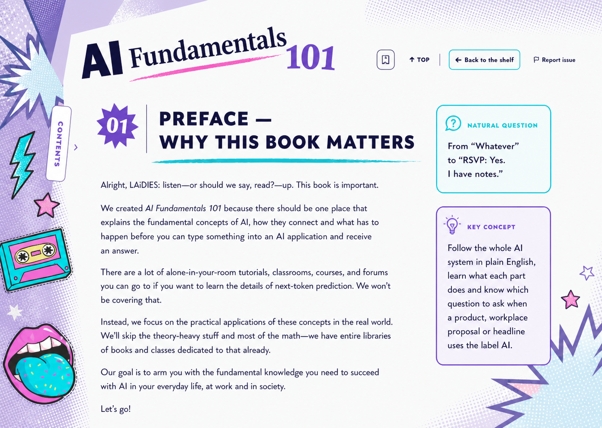
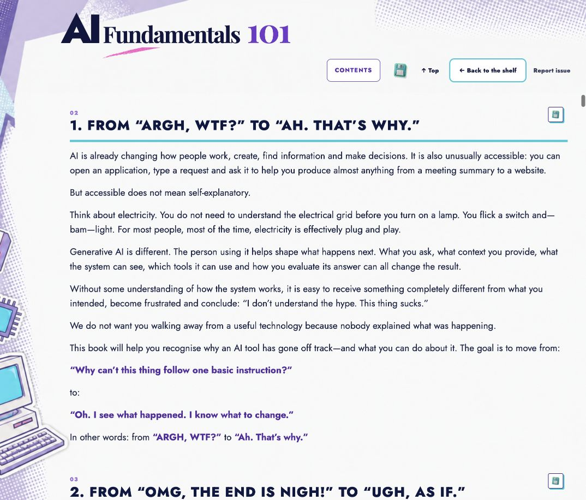

<!doctype html>
<meta charset="utf-8">
<title>AI Fundamentals heading format comparison</title>
<style>
  *{box-sizing:border-box}body{margin:0;padding:24px;background:#11183b;color:#fff;font:700 16px/1.4 system-ui,sans-serif}
  main{display:grid;grid-template-columns:1fr 1fr;gap:20px;align-items:start}figure{margin:0}figcaption{margin:0 0 8px}
  img{display:block;width:100%;height:auto;background:#fff;border:2px solid #78c7ff}
</style>
<main>
  <figure>
    <figcaption>Approved horizontal heading hierarchy</figcaption>
    
  </figure>
  <figure>
    <figcaption>Repaired continuous reader — section heading remains horizontal</figcaption>
    
  </figure>
</main>
